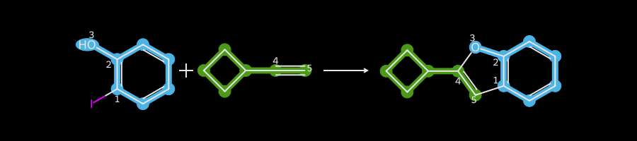

from rdkit import Chem
from rdkit.Chem import Draw
from rdkit.Chem.Draw import IPythonConsole
from rdkit.Chem import rdChemReactions
import rdkit
print(rdkit.__version__)2025.09.1This one was inspired by an example I did this week for the class I’m teaching: I wanted to apply an RDKit reaction to a set of reactants and then draw the reactants and the products of the reaction as a normal reaction with the mapped atoms indicated. Doing that made me realize that, with a bit more code, I could produce some other useful views of a reaction.
In addition to the visualizations themselves, this post has some potentially useful details about what kind of extra information is available in the products of reactions.
from rdkit import Chem
from rdkit.Chem import Draw
from rdkit.Chem.Draw import IPythonConsole
from rdkit.Chem import rdChemReactions
import rdkit
print(rdkit.__version__)2025.09.1The first example reaction, adapted from the SI for http://pubs.acs.org/doi/abs/10.1021/ci200379p. I frequently use this paper as a source of reaction SMARTS definitions for real reactions; left to my own devices I would just use amide bond formation all the time, and that gets pretty boring pretty quick.
# adapted example from the SI for: http://pubs.acs.org/doi/abs/10.1021/ci200379p
sma = '[Br,I;$(*c1ccccc1)]-[c:1]:[c:2]-[OH1:3].[CH1:5]#[C;$(C-[#6]):4]>>[c:1]1:[c:2]-[O:3]-[C:4]=[C:5]-1'
rxn = rdChemReactions.ReactionFromSmarts(sma)
rxnA set of reactants for the reaction:
r1 = Chem.MolFromSmiles('c1cc(I)c(O)cc1')
r2 = Chem.MolFromSmiles('C1CCC1C#C')
Draw.MolsToGridImage([r1,r2],molsPerRow=2)Run the reaction and show the product:
reactants = (r1,r2)
ps = rxn.RunReactants(reactants)
ps[0][0]Look at the properties set on one of the atoms in the product that came from a mapped atom:
prod = ps[0][0]
print('mapped atom:',prod.GetAtomWithIdx(0).GetPropsAsDict(includePrivate=False))
print('unmapped atom:',prod.GetAtomWithIdx(8).GetPropsAsDict(includePrivate=False))mapped atom: {'old_mapno': 1, 'react_atom_idx': 2, 'react_idx': 0}
unmapped atom: {'react_atom_idx': 6, 'react_idx': 0}Here’s what those mean: 1. old_mapno: the atom map number for the atom (obviously only present on mapped atoms) 2. react_idx: which reactant the atom came from 3. react_atom_idx: the index of the atom in its reactant
What I did for the course was set the atom map numbers on the reactants and products, combine them into a new reaction, and then display that reaction.
Start by setting the atom map numbers:
# since we're going to modify things, copy them first:
prod = Chem.Mol(ps[0][0])
reactants = (Chem.Mol(r1),Chem.Mol(r2))
for at in prod.GetAtoms():
pd = at.GetPropsAsDict()
if 'old_mapno' not in pd:
continue
r = reactants[pd['react_idx']]
rat = r.GetAtomWithIdx(pd['react_atom_idx'])
rat.SetAtomMapNum(pd['old_mapno'])
at.SetAtomMapNum(pd['old_mapno'])Now create the reaction and display it:
nrxn = rdChemReactions.ChemicalReaction()
nrxn.AddReactantTemplate(reactants[0])
nrxn.AddReactantTemplate(reactants[1])
nrxn.AddProductTemplate(prod)
IPythonConsole.molSize = 600,150
nrxnOnce the atom-mapping information is there, The reaction drawing code can also highlight the atoms based upon which reactant they came from. Unfortunately this causes the atom-mapping information to not be displayed:
IPythonConsole.highlightByReactant = True
nrxnIPythonConsole.highlightByReactant = FalseAt this point it makes sense to take what we know and write a function to draw the highlighted reaction. By working directly with a MolDraw2DCairo object instead of using the notebook integration we more easily control what’s going on.
from IPython.display import Image
def drawHighlightedReaction(rxn, reacts, prods,
includeAtomMaps=True, highlightAllAtoms=True,
mapAllAtoms=False,
highlightColors=None,
size=(900,200), annotationFontScale=0.74,
drawOptions=None):
''' draws a specific reaction with the reactants and products highlighted
Returns an Image object with the drawing.
Arguments
rxn: the reaction object (not currently used)
reacts: a sequence of molecules. The reactants used in the reaction
prods: a sequence of molecules. The products from the reaction
includeAtomMaps: bool. Whether or not atom map numbers should be included in the output
highlightAllAtoms: bool. Whether or not to highlight all reactant/product atoms in the output.
If True, non-mapped atoms will be highlighted.
If False, only the mapped atoms will be highlighted
mapAllAtoms: bool. Whether or not to include atom mapping numbers on all atoms.
If True, non-mapped atoms will have negative atom map numbers displayed
highlightColors: sequence of 3-tuples. Controls the colors used for highlighting the reactants.
The values should go from 0-1. The sequence should have (at least) len(reacts)
elements.
size: tuple. Controls the size of the output image.
annotationFontScale: float. Controls the size of the atom map notes (if being drawn)
drawOptions: a MolDraw2DOptions object. Used as the draw options for the rendering.
Overrides annotationFontScale if provided.
'''
# make copies of all the reactants and the products since we will modify them
reacts = [Chem.Mol(r) for r in reacts]
prods = [Chem.Mol(p) for p in prods]
# find the largest atom map number, used to initialize the negative atom map numbers
# when we are doing highlightAllAtoms
negVal = 0
if mapAllAtoms:
for prod in prods:
for at in prod.GetAtoms():
if at.HasProp('old_mapno'):
negVal = min(negVal,-1 * at.GetIntProp('old_mapno'))
negVal -= 1
# loop over each of the products and set the atom map and note information
# in both the product atoms and corresponding reactant atoms.
for prod in prods:
for at in prod.GetAtoms():
pd = at.GetPropsAsDict()
mno = pd.get('old_mapno',negVal)
if mno<0:
if not highlightAllAtoms:
continue
else:
negVal -= 1
r = reacts[pd['react_idx']]
rat = r.GetAtomWithIdx(pd['react_atom_idx'])
for tat in at,rat:
tat.SetAtomMapNum(mno)
if includeAtomMaps and (mno>0 or mapAllAtoms):
tat.SetProp('atomNote',str(mno))
# create the reaction we'll actually render:
nrxn = rdChemReactions.ChemicalReaction()
for react in reacts:
nrxn.AddReactantTemplate(react)
for prod in prods:
nrxn.AddProductTemplate(prod)
# and draw it
d2d = Draw.MolDraw2DCairo(size[0],size[1])
if drawOptions is not None:
d2d.SetDrawOptions(drawOptions)
else:
d2d.drawOptions().annotationFontScale=annotationFontScale
d2d.DrawReaction(nrxn, highlightByReactant=True, highlightColorsReactants=highlightColors)
d2d.FinishDrawing()
return Image(d2d.GetDrawingText())r1 = Chem.MolFromSmiles('c1cc(I)c(O)cc1')
r2 = Chem.MolFromSmiles('C1CCC1C#C')
reactants = (r1,r2)
ps = rxn.RunReactants(reactants)
drawHighlightedReaction(rxn,reactants,ps[0])drawHighlightedReaction(rxn,reactants,ps[0],highlightAllAtoms=False)Include negative atom map numbers for atoms that were not in the reaction definition;
drawHighlightedReaction(rxn,reactants,ps[0],mapAllAtoms=True)drawHighlightedReaction(rxn,reactants,ps[0],includeAtomMaps=False)Change the highlighting
drawHighlightedReaction(rxn,reactants,ps[0],highlightColors=[(0.3, 0.7, 0.9), (0.6, 0.9, 0.3)])Provide our own draw options. Here we play with dark mode:
from rdkit.Chem import rdDepictor
for r in reactants:
rdDepictor.Compute2DCoords(r)
dopts = Draw.MolDrawOptions()
Draw.SetDarkMode(dopts)
dopts.annotationFontScale = 0.8
drawHighlightedReaction(rxn,reactants,ps[0],drawOptions=dopts,
highlightColors=[(0.3, 0.7, 0.9), (0.3, 0.6, 0.1)])
Do another reaction from the same paper:
rxn = rdChemReactions.ReactionFromSmarts('[c:1](-[C;$(C-c1ccccc1):2](=[OD1:3])-[OH1]):[c:4](-[NH2:5]).[N;!H0;!$(N-N);!$(N-C=N);!$(N(-C=O)-C=O):6]-[C;H1,$(C-[#6]):7]=[OD1]>>[c:4]2:[c:1]-[C:2](=[O:3])-[N:6]-[C:7]=[N:5]-2')
reactants = [Chem.MolFromSmiles(x) for x in ('c1c(C(=O)O)c(N)ccc1','CCC(=O)Nc1ccccc1')]
prods = rxn.RunReactants(reactants)
drawHighlightedReaction(rxn,reactants,prods[0])